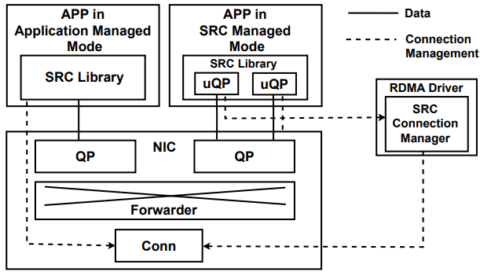
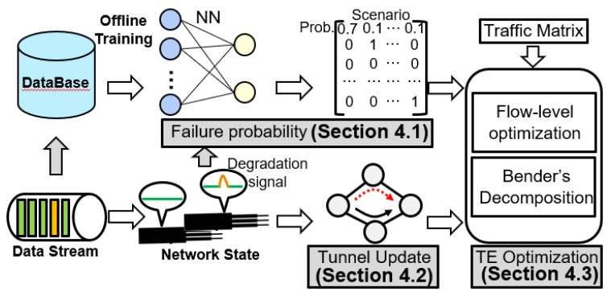
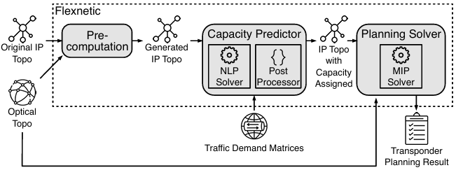
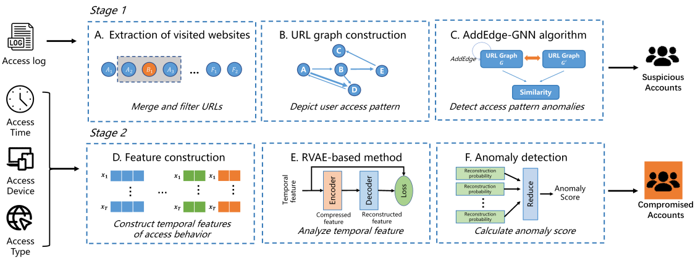
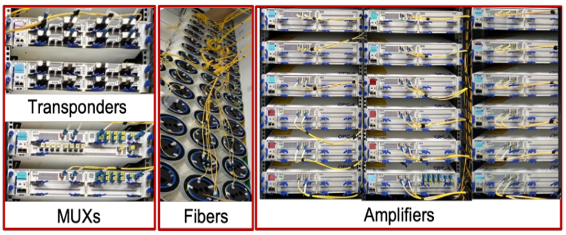

Yiren Zhao
M.A.Sc. Student @ UofT
Biography
I am a second-year M.A.Sc. student in the Department of Electrical and Computer Engineering at the University of Toronto, supervised by Prof. Baochun Li. I received my Bachelor's degree in Electrical and Computer Engineering, also from the University of Toronto.
Research
My research aims to build efficient network systems for cloud and AI infrastructures. Toward this vision, my work focuses on networking for distributed machine learning, next-generation RDMA systems, and optical and wide-area (WAN) networks. I seek to optimize performance, scalability, and reliability in modern cloud and AI systems.
Publications




